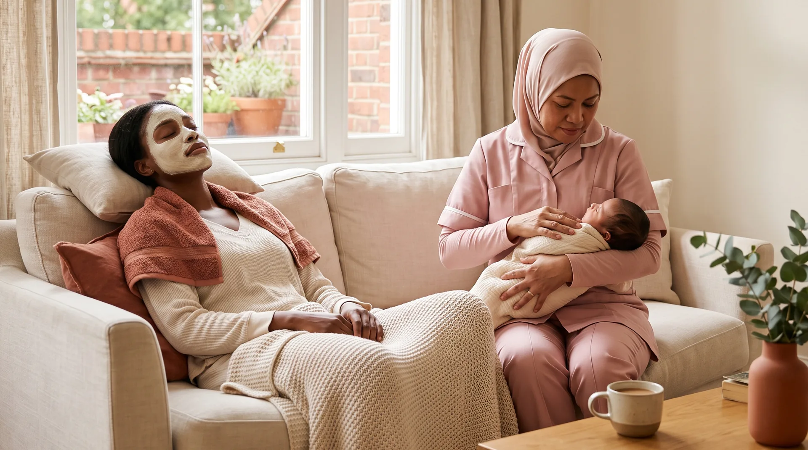
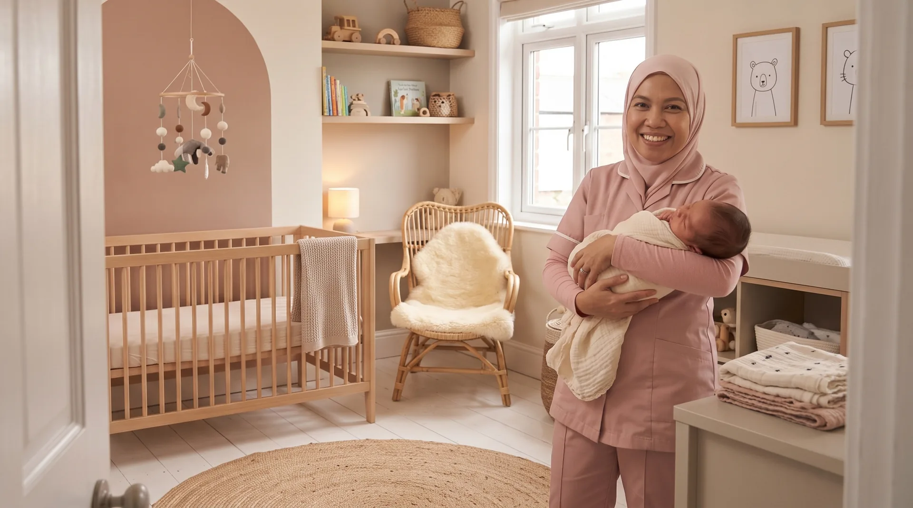
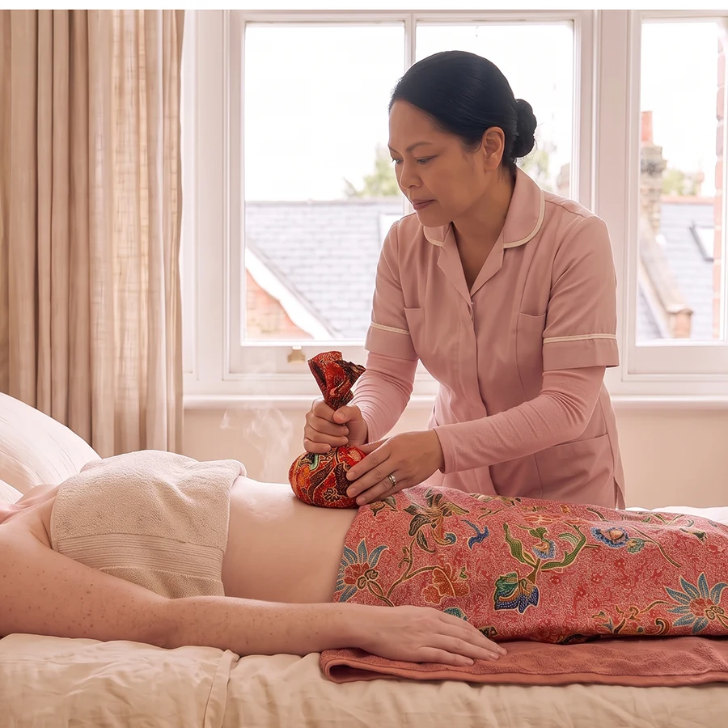

Programmes
The Postpartum Suite offers four programme lengths, from five to thirty days. Every programme includes the same four areas of care described on The Care page. Longer programmes extend that support and repeat treatments more often as your recovery progresses.

Four Lengths of Care
- 5 days, introductory price £1,995. Programme price £2,495.
- 7 days, introductory price £2,495. Programme price £2,995.
- 14 days, introductory price £4,495. Programme price £4,995.
- 30 days, introductory price £6,399. Programme price £6,995, the full confinement period as it is traditionally kept.
Introductory pricing is held for bookings taken in 2026. All prices are indicative until confirmed at your consultation.

What Is Included
Every programme includes hands on care for your baby, recovery treatments, three meals cooked daily in your kitchen, and household support, exactly as described on The Care page. Nothing is added or removed by length. What changes is how many times treatments repeat, and how much of your recovery the programme spans.

How Treatments Scale With Length
On the five, seven and fourteen day programmes, treatment counts are totals for the whole stay. On the thirty day programme, several treatments repeat weekly instead. Postpartum massage with hot stone therapy, for example, is included three times across five days and increases with the length of your programme. Herbal baths and belly binding are included daily on every programme.
Note for Amidat
Two documents already in the project file, the Programmes PDF and the Care Packages PDF, show slightly different treatment counts for some lengths. These need to be reconciled to one confirmed table before this section is finished.

Live In or Daytime Care
Live in care means your specialist stays in your home for the full length of the programme. Daytime in home care means your specialist arrives each morning and leaves in the evening, and carries a supplement of £30 a day toward her accommodation and travel. Both formats include the same care. The difference is whether your specialist is present overnight.
Daytime care runs from 7am to 7pm. Day and night care is also available on live in programmes. Your specialist begins at 1pm, settles for the evening at 7pm, and takes your baby from 11.30pm until 6am, so you can sleep through the night. Breakfast is not included when night care is selected, since the day begins at 1pm.

Build Your Own Programme
If the shape of care you are looking for sits outside the four published programmes, you can build an indicative programme and see a fee update as you go. This is not a quote or a booking. Your final programme and fee are confirmed after a consultation.

Single Treatments
If you are not ready for a full programme, single treatment sessions are also available, booked directly.